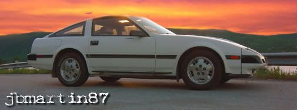

-
So you've removed your GLL steering wheel, swapped it with some other wheel (aftermarket, GL, etc.), and now want your cruise control back. Here's how it's done:
What you will need:
- GL combination switch assembly (light switch, wiper switch, and cruise switch)
- GL column plastics (cannot reuse GLL, screw locations are different and is not cut out for cruise switch)
- Cruise switch harness (car end. Can be cut, just save enough wire to solder new wire to). *This is optional, makes for quick removal of combination switch in the future.
- 2 Diodes.
- Wire (enough to extend each wire from cruise switch (5 in total) to ASCD controller in drivers kick panel)
- Solder/iron/tape/heatshrink/knife/tools.
- Some knowlege of vehicle wiring.
First, follow this guide. It will show you how to remove the GLL combination switch, install the GL one and get your horn working.
Next, remove the ASCD controller. It is tightly tucked away just above the fuse panel. Have a look at the FSM if you are having trouble finding it.
Next, extend each of the cruise switch wires down to the ASCD controller.
Next, splice each of your wires into the controller wiring as shown in my diagram below. You can cut the wires (except for the stop lamp wire and pin 14 wire) and connect them directly to the cruise switch if you wish, I chose to splice just in case I decided to go back to the GLL wheel in the future. All changes to the wiring are shown in red:
Normally, in a GL, the cancel wire would be connected to pin 11 on the ASCD controller. The pin is there on the GLL but there is no wire in the harness, so I chose to use the stop lamp wire instead. The diodes are added so that, when using the cancel button, the brake lights will not come on and to prevent power from the brake lights from feeding back into the ASCD controller.
Finally, you need to ground pin 5 of the steering wheel receiver. Refer to your FSM for receiver location, it is under the luggage box in 2 seater models but I am unsure of the location in a 2+2. Pin 5 needs to be grounded so that the cruise pilot light and relay will stay on when activated.
Put everything back together and test it out.
*** NOTE: The wiring diagram above is for an 85 model. Check the FSM for your year to confirm the pin connections. ***
1985 GLL 300ZX Turbo -
Great addition to my GLL to GL steering wheel swap guide. Mine was based around not keeping cruise.- VG30DET (HE341) 86 300ZX - 1982 280ZX Turbo - Headered NA 1986 300ZX 2+2 - 2000 Xterra - -
sick!! I've wanted to do this for some time now just didn't know where to start thanks man!Click here to view my Stanced VG33ET Build thread / Click here to view my Feed Back thread
-
What type of Diodes did you use?
-
I just used a couple diodes that I had laying around, not sure what the part # is. A 1N4001 diode will work fine.xenonxiii wrote: What type of Diodes did you use?
1985 GLL 300ZX Turbo

Copyright © 2006–. All rights reserved. Privacy Policy